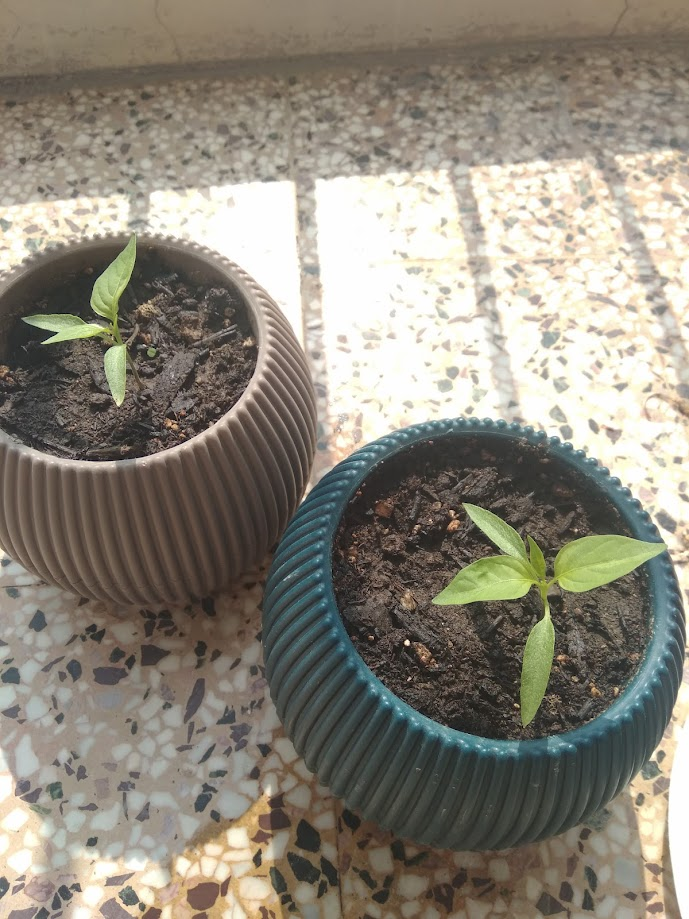
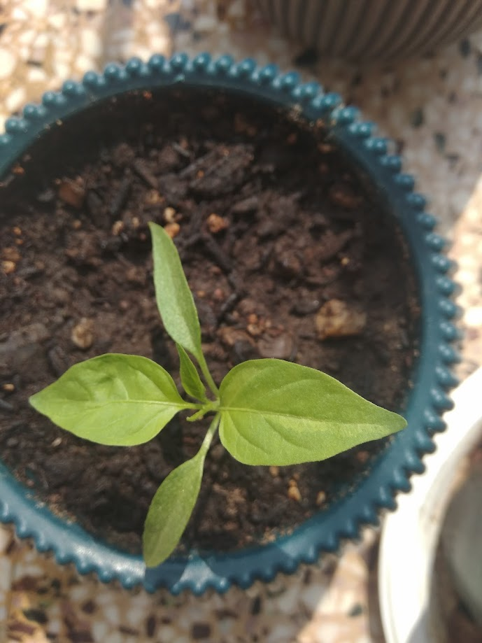

D1~ 20/05/2025
First photo! Just planted everything. The soil smells great and it’s full of promise.
Planted multiple seeds(4-5) of 3x Jalapeno pots and 2x Habanero. Habanero on the dark small pots
üå±Insights: Watering them every day with full sunlight.
D7~ 25/05/2025
The first baby leaf(I think I am saying it correctly) appeared. Thought it was just some other weed leaf.
This is the jalapeno pot and it was the first to come out of the soil.
üå±Everyone else is sleeping still zZz. When is wake up time??
D11~ 31/05/2025
At day 10 I still didn't see any sprouts. (There were a couple of cloudy days).
I got anxious and snooped around the soil. I also wanted to check if the soil was too compact or had too many hard parts like wood or rocks not allowing the sprouts to come out. In the process I found out that there were sprouts.
As soon as I found them I let them be cause I didn't want to ruin their "come out" process anymore and just watered them.
This is what they looked like at Day 11. Also on the small Jalapeno pot another sprout made their 2baby flowers ahead of the others.
üå±At this point I am starting to look more and more into the flowering stage and how to make an online diary to share with people.
üéâD12~ 01/06/25 (EU format)
üéâüéâSUNNY DAY AT LAST AND EVERYONE IS MAKING A PARTYüéâüéâ
So excited today. I woke up to every sprout having their baby leaves out. Also we can see a second double sprout pot which gives me hope after not seeing anything for 10days.
üå±After some research I decided to not water them daily if not needed(check with finger if soil is dry).
Also I will try to progressively give them more light and not expose these babies to direct sun for the whole day. I mean the first one to grow baby flowers was exposed to it full time and looks fine but then again there were a lot of cloudy days
Nevertheless I read on the internet that it makes the plants stronger so I will start putting them out of the direct sun starting at 10a.m. and progress by adding 1hour of direct sun time every day.
D13~ 02/06/2025
The jalapeno pot that sprouted first is now growing it's first true leaf. I am getting more and more excited.
Today I was supposed to stop their direct sunlight at 10.am but I didn't until 12p.m (2 hours later). The plan is still in place starting tomorrow!!!
The leaves seem normal and healthy.
Let me note that I checked for the soil moisture today and it was not soggy but not dry as well. I decided to skip the watering process today.
üå±Finally making the diary and getting it up online. Currently I make it for github pages but I will improve it and make it more "automatic" as time passes.
I will maybe move to wordpress or something to make it more dynamic as well.
Note to self: take better pictures
D14~ 03/06/2025
We have officially completed the 2nd week!! Nothing much happening today, the plants look lively and one of the habanero is starting to grow it's first true leaf.
I noticed that the pot with the jalapeno that grew first has grown 3 sprouts. This is either due to me putting a lot of seeds in there or that the soil is better?! Seems weird.
Today I was planning on moving the pots out of direct sun at 10a.m but they were in the shade (sun didn't come to that spot yet).
That puts us back on track and we are right on schedule. Yesterday they had approximatelly 2hours of direct sunlight and today I left them for 3h-3.30h. Tomorrow I will do 4h-5h and after that I will leave the for the whole day unless it's scortching hot.
temptex
D15~ 04/06/2025
Gday!! Yesterday I placed my pots in a different place where they would have sun since early morning.
Firstly, about the habaneros. They are still small and one of them has its leaves curling a bit in the edges. I am trying to be careful with sun exposure since that's usually the reason or the roots and watering but I've noticed it happens during shade time as well.
Anyhow..their first true leaves are barely visible now so as soon as they are out I think they will start developing a lot faster and have a good time into the flowering stage.
Concerning the jalapenos on the round pots they look really healthy and tall and they are starting to grow their first true leaves as well.
Lastly about the prodigy pot, I am gonna start calling it the "Jar of Greed" since it's the most successful pot so far. Yesterday I snipped the baby sprout that has round baby leaves because it was probably weed and I didn't want it to "steal" the nutrients from the other seedlings in the pot. About the big seelding, the true leaf is growing really fast and it also started to grow a second true leaf. It is really ahead of the others. For sure it will be the first that needs a repot.
üå±I am really sceptical about watering them or how much direct sunlight time they need. If they were at the flowering stage I wouldn't mind leaving them half a day with dry soil in order to not overdo it, but since they are in the "baby leaves" phase their roots are sensitive. I will take special care of the smaller ones and move them to shade earlier considering their leaves curl since they do not have the same needs as the most grown ones.
D16~ 05/06/2025
Another day another worry!! Everything is growing steadily. Yesterday I noticed that all of them started to grow their true leaves and went ahead and foolishly proclaimed a "prodigy" pot.
Well.......today I saw that all the true leaves from the rest of the seedlings are coming out in pairs. Which is weird because in the big seedling that grew faster than the others the true leaves come out one by one and even at this length they do not resemble true pepper leaves yet.
It still looks like a pepper seedling though, I will have to be extra careful in case we have an intruder..!
üå±Sad thing is that I will be out of home for a week or so I will not be able to take very big care of them apart from watering them. I hope this one week should be plenty for them to grow without needing a transplant.
D17~ 06/06/2025
Aight yellooooooooooo, the jalapenos are looking real good. Soaking up the sun every day and growing steadily and STRONG. The new spot I've put them also has a nice breeze so it's good for strengthening the stems as well.
About the habaneros, they look a bit stressed and smol but I am not concerned. At first I was having doubts about the soil being too little or the direct sun stressing them but I think they will be really glad and have a great blooming phase when I repot them.
Aaaaaaaaaaand about the elephant in the room..this CANNOT be a jalapeno seedling am I right? üòÇüòÇüòÇüòÇ WHAT ARE THOSEEE. üòÇüòÇ
üå±I will do some research and check if I should remove it because it is growing very very fast and most probably eating all the nutrients from the pot.
D18~ 07/06/2025
Yo day 18! As you can see I murdered the tall seedling. Yeah..yeah I know..gave the pot a name and everything cause of it BUT. This was clearly not a pepper seedling. Also the fact that another weed seedling sprouted in this pot with round leaves lead me to the conclusion that we had an impostor AMONG US.
On the bright side. The true leaves of all the Jalapeno seedlings are growing bigger and bigger and they look like pepper leaves as well! Really happy about it.
The habanero seedlings are smoler and less self inclined but I think this is their characteristic and I have faith in them! They do not seem stressed so I am chillin!!!!
üå±I am quite thoughtful about the watering. Lately the days have been really hot but not all pots drain all the water. I guess this happens because bigger seedlings have bigger needs as well. I will continue doing it by heart for now.



D23~ 12/06/2025
Yo I am back, look at these grown ahh plants. Everyone is growing leaves bigggggg(except the habaneros). Maybe it is because the pots are smaller thus there is not so much soil but I am not really sweating about it. I will replant them when I replant the Jalapenos no matter how big they are so they can continue from there.
The Jalapeno leaves are looking fine though. They are growing by the day and they really start to look like pepper plants. I will most likely replant them in less that 2 weeks time. I've noticed that in these scortching hot days they love water like it's white monster so I am watering them every day.
For now they seem to be ok with all the direct sunlight, also the weather helps because it's been a bit cloudy as well so it's really good for the early true leaves.
üå±I've noticed some white spots coming and going in some of the plants but they are instantly gone in an evening's time after some care and hydration. I am also checkin the leaves all the time for any yellowing but they seem totally healthy.
D25~ 14/06/2025
Heyoo, looking good looking good. New set of leaves are coming out. After the new set of leaves come out and grow to the size of the current ones I am going to replant them. To be honest I am kind of hasty and I want to replant them as soon as possible
because I think I did a bad job with the current containers. Also a reminder that I am watering them every single day. I may be overwatering a bit but I cannot risk the heat of the noon sun. I feel that with these temperatures the plants are going to literally burn crisp to their roots.
üå±One of the plants is starting to tilt and this may be due to overwatering. I will stake it and try a different approach where I only water the plants when they soak all the water and start to wilt a bit. I hope this will not ruin them. So the plan is not to grow them big and tall stem but to have a solid foundation and root system. It's prolly gonna be a week or so before replanting. Let's make the most out of it.